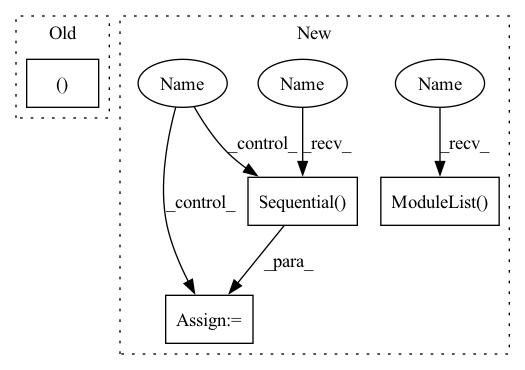

Pattern ID :23462

Before Change
import torch.nn.functional as F
def multibox(fpn_level, num_anchors, num_classes, fea_channel):
(loc_layers, conf_layers) = ([], [])
loc_channel = num_anchors * 4
cls_channel = num_anchors * num_classes
for _ in range(fpn_level):
After Change
loc_channel = num_anchors * 4
cls_channel = num_anchors * num_classes
dis_channel = 256
for _ in range(fpn_level):
loc_layer = nn.Sequential(
BasicConv(fea_channel, fea_channel, 3, padding=1),
nn.Conv2d(fea_channel, loc_channel, kernel_size=3, padding=1)
)
loc_layers.append(loc_layer)
conf_layer = nn.Sequential(
BasicConv(fea_channel, fea_channel, 3, padding=1),
nn.Conv2d(fea_channel, cls_channel, kernel_size=3, padding=1)
)
conf_layers.append(conf_layer)
dist_layer = nn.Conv2d(fea_channel, dis_channel, kernel_size=3, padding=1)
dist_layers.append(dist_layer)
return (nn.ModuleList(loc_layers), nn.ModuleList(conf_layers), nn.ModuleList(dist_layers))
class Detector(nn.Module):
In pattern: SUPERPATTERN
Frequency: 4
Non-data size: 4
Instances
Fragment ID: 73595698
Project Name: zhangheng19931123/mutualguide
Commit Name: a1922567db242ed73012d090b249066d1159a902
Time: 2021-06-01
Author: heng.zhang@irisa.fr
File Name: models/detector.py
M Class Name: AnonimousClass
N Class Name: AnonimousClass
M Method Name: multibox(4)
N Method Name: multibox(4)
M Parent Class:
N Parent Class:
M File Name: models/detector.py
N File Name: models/detector.py
M Start Line: 10
M End Line: 16
N Start Line: 11
N End Line: 28
'>
Before Change
)
elif dataset in ["imagenet", "imagenet100"]:
T = [
transforms.RandomResizedCrop((224, 224), scale=(0.2, 1)),
transforms.RandomApply(
[transforms.ColorJitter(brightness, contrast, saturation, hue)], p=0.8
),
After Change
p=0.8,
),
transforms.RandomGrayscale(p=0.2),
transforms.RandomApply(nn.ModuleList([transforms.GaussianBlur(23)]), p=0.5),
transforms.RandomHorizontalFlip(p=0.5),
transforms.ConvertImageDtype(torch.float) if jit_transforms else transforms.ToTensor(),
transforms.Normalize(mean=(0.485, 0.456, 0.406), std=(0.228, 0.224, 0.225)),
]
if jit_transforms:
T = jit.script(nn.Sequential(*T))
else:
T = transforms.Compose(T)
'>
Fragment ID: 73595683
Project Name: vturrisi/contrastive-learning
Commit Name: de6f2f0f996574330fd14f847aaa1b38fcc06b4b
Time: 2021-03-31
Author: vt.turrisi@gmail.com
File Name: utils/contrastive_dataloader.py
M Class Name: AnonimousClass
N Class Name: AnonimousClass
M Method Name: prepare_transformations(7)
N Method Name: prepare_transformations(6)
M Parent Class:
N Parent Class:
M File Name: utils/contrastive_dataloader.py
N File Name: utils/contrastive_dataloader.py
M Start Line: 142
M End Line: 152
N Start Line: 63
N End Line: 106
'>
Before Change
import torch.nn.functional as F
def multibox(fpn_level, num_anchors, num_classes, fea_channel):
(loc_layers, conf_layers) = ([], [])
loc_channel = num_anchors * 4
cls_channel = num_anchors * num_classes
for _ in range(fpn_level):
After Change
loc_channel = num_anchors * 4
cls_channel = num_anchors * num_classes
dis_channel = 256
for _ in range(fpn_level):
loc_layer = nn.Sequential(
BasicConv(fea_channel, fea_channel, 3, padding=1),
nn.Conv2d(fea_channel, loc_channel, kernel_size=3, padding=1)
)
loc_layers.append(loc_layer)
conf_layer = nn.Sequential(
BasicConv(fea_channel, fea_channel, 3, padding=1),
nn.Conv2d(fea_channel, cls_channel, kernel_size=3, padding=1)
)
conf_layers.append(conf_layer)
dist_layer = nn.Conv2d(fea_channel, dis_channel, kernel_size=3, padding=1)
dist_layers.append(dist_layer)
return (nn.ModuleList(loc_layers), nn.ModuleList(conf_layers), nn.ModuleList(dist_layers))
class Detector(nn.Module):
'>
Fragment ID: 73595681
Project Name: zhanghengdev/mutualguide
Commit Name: a1922567db242ed73012d090b249066d1159a902
Time: 2021-06-01
Author: heng.zhang@irisa.fr
File Name: models/detector.py
M Class Name: AnonimousClass
N Class Name: AnonimousClass
M Method Name: multibox(4)
N Method Name: multibox(4)
M Parent Class:
N Parent Class:
M File Name: models/detector.py
N File Name: models/detector.py
M Start Line: 10
M End Line: 16
N Start Line: 11
N End Line: 28